전기철도기사 (2013-08-18 기출문제)
1과목: 전기철도공학
1. 가공전차선로에서 양단의 가고가 같고 전차선이 수평인 경우 점 X 에서의 행거길이 L[m]은? (단, 경간 중앙에서의 이도를 D, 가고 H, 임의의 점 X에서의 이도를 R이라 한다.)
- L=D+H×R
- L=D-H-R
- L=H×D-R
- L=H-D+R
(정답률: 알수없음)

2. 누설전류에 의한 전식방지 방법에서 배류식이 아닌 것은?
- 직접배류식
- 선택배류식
- 강제배류식
- 유전배류식
(정답률: 80%)
3. 활차식 자동장력조정장치의 조정거리(L)를 구하는 식은? (단, △L=전차선 신장길이, α=전차선이 선팽창 계수, △t=온도변화(표준온도에 대하여))
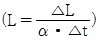
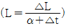
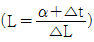
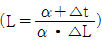
(정답률: 80%)
4. 전차선의 편위를 정하는 요소가 아닌 것은?
- 전기차 동요에 따른 집전장치의 편위
- 급전선의 전압변동에 따른 편위
- 풍압에 따른 전차선의 편위
- 곡선로에 의한 전차선 편위
(정답률: 알수없음)
5. 뢰의 파두장 3[μs], 전파속도 300[m/μs]라 할 때 피뢰기의 직선적 유효보호범위[m]는?
- 450
- 650
- 700
- 900
(정답률: 알수없음)
6. 가공 전차선로에서 조가선의 접속 방법으로 거리가 먼 것은?
- 압축 슬리브에 의한 접속
- 바인드에 의한 접속
- B금구에 의한 접속
- 와이어 클립에 의한 접속
(정답률: 알수없음)
7. 제3궤조방식에서 적용하는 최고풍속[m/s]은?
- 10
- 25
- 45
- 55
(정답률: 알수없음)
8. 전차선 지지점에서 조가선과 전차선이 만드는 면과 조가선 지지점에서 궤도면으로 내린 수직선과 최대간격[m]은? (단, 속도등급은 250킬로급 이상)
- 5
- 10
- 20
- 30
(정답률: 70%)
9. 다음 중 가공전차선로의 기계적 구분 개소(에어 조인트)에 사용되는 커넥터로 맞는 것은?
- M-M커넥터
- T-T커넥터
- M-T커넥터
- T-M-M-T커넥터
(정답률: 알수없음)
10. 교류전철변전소 주변압기(스코트결선)의 1차전류가 3상평행전류이면 3상 전류의 벡터 합은?
- 0
- √3/2
- √2/3
- √3
(정답률: 알수없음)
11. 열차운전중의 속도, 시간, 주행거리, 전류, 전력량 등의 상호관계를 도표로 표시하는 것은?
- 운전선도
- 열차속도
- 열차거리
- 평균속도
(정답률: 알수없음)
12. 직류강체 전차선로 방식에서 T-Bar에 전차선이 잘 밀착되도록 연속적으로 고정시키는 연결금구는?
- 휘드이어
- 지지금물
- 절연매립전
- 롱이어
(정답률: 알수없음)
13. 전기철도 급전회로의 섬락보호 방식으로 거리가 먼 것은?
- 이중 절연방식
- PW 무절연 방식
- 섬락 보호지선 방식
- 보호망 방식
(정답률: 알수없음)
14. 직류강체방식(T-bar)에서 지상부의 가공 전차선이 터널내로 들어와 강체 전차선으로 바뀌어지는 부분에 팬터그래프가 자연스럽게 옮겨지면서 원활하게 운행할 수 있도록 하는 장치는?
- 건널선 장치
- 흐름 방지 장치
- 지상부 이행 장치
- 절연매입전
(정답률: 알수없음)
15. 고속철도에서 커티너리(Catenary)가선방식의 지지점에서 전차선의 표준가고[mm]는? (단, 속도등급은 300, 350킬로급)
- 500
- 800
- 1400
- 2000
(정답률: 알수없음)
16. 가공 전차선로에서 흐름방지장치의 설치 위치는?
- 인류구간 시작점
- 인류구간 종착점
- 인류구간 양쪽
- 인류구간 중성점
(정답률: 73%)
17. 운전속도에 따라 달라지는 전차선로의 동적작용은 도플러 계수에 의해 접근이 가능하다. 이 도플러 계수를 구하는 산출식은? (단, V : 운전속도[m/sec], C : 파동전파속도[m/sec])
- (C-V)/(C-V)
- (C-V)/(C+V)
- (C-V)/(CV)
- (C-V)/C
(정답률: 알수없음)
18. 다음 중 자동장력조정장치의 종류에 해당하지 않는 것은?
- 활차식
- 턴버클식
- 도르래식
- 스프링식
(정답률: 70%)
19. 변압기의 결선방식 중 3상을 2상으로 변환하는 결선 방식의 변압기는?
- Y-Y 결선 변압기
- Y-△ 결선 변압기
- △-△ 결선 변압기
- 스코트 결선 변압기
(정답률: 85%)
20. 강체 가선방식의 편위 형태는?
- 지그재그의 형태
- 반원형의 형태
- 일직선의 형태
- 완만한 사인곡선의 형태
(정답률: 알수없음)
2과목: 전기철도 구조물공학
21. 전차선로 구조물의 세장비가 다음과 같을 때 좌굴의 위험이 가장 큰 구조물은?
- 50
- 100
- 150
- 200
(정답률: 알수없음)
22. 밑변 b, 높이 h인 삼각형 단면인 경우 밑변을 지니는 수평축에 대한 단면 2차 모멘트는?
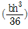
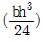
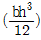
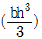
(정답률: 알수없음)
23. 지표면의 높이가 9[m]인 단독지지주에 25[kgf/m]의 수평분포하중이 작용하는 경우 3[m]지점에서으 모멘트[kgf·m]는?
- 280
- 450
- 504
- 900
(정답률: 알수없음)
24. 가공전차선로에서 전철구간 경간(S)을 산출하는 식으로 맞는 것은? (단, S:경간[m], R:곡선반경[m], d:전차선 편위[m])
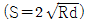
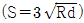
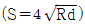
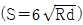
(정답률: 알수없음)
25. 가공전차선로에서 전선의 수평장력이 2500[kgf], 전주에 설치한 지선의 취부 각도가 30°일 경우 지선용 재료에 필요한 항장력[kgf]은 얼마 이상이어야 하는가?
- 6500
- 7500
- 8500
- 12500
(정답률: 알수없음)
26. 전주의 건식이 곤란한 개소에서 고정빔이나 터널의 천장 아래로 설치하여 가동브래킷, 곡선당김장치 등을 지지하기 위한 것은?
- 평행틀
- 지선
- 하수강
- 애자
(정답률: 알수없음)
27. 그림과 같은 라멘구조물의 부정정차수는? (단, 중앙의 절점은 힌지이다.)
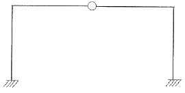
- 정정
- 1차부정정
- 2차부정정
- 3차부정정
(정답률: 알수없음)
28. 그림과 같은 단면에서 지름 3cm 원을 떼어 버린다면 도심축 X축에 대한 단면 2차 모멘트는 약 몇 [cm4]인가?
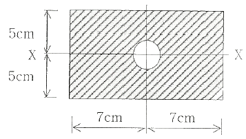
- 1062.6
- 1066.6
- 1162.7
- 2282.6
(정답률: 알수없음)
29. 경간이 60[m]이고 곡선반지름이 600[m]인 곡선로에서 지지물과 경간 중앙에서의 기울기량이 같을 때 전차선의 기울기량 d[m]는?
- 0.37
- 0.75
- 1.5
- 3.0
(정답률: 알수없음)
30. 바깥지름이 d1, 안쪽지름이 d2인 원통형 단면에서 단면의 중심축에 대한 단면 2차 극모멘트는?(오류 신고가 접수된 문제입니다. 반드시 정답과 해설을 확인하시기 바랍니다.)
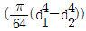
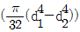
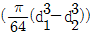
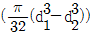
(정답률: 알수없음)
31. 단면의 폭이 b, 높이가 h인 직사각형 단면에서 도심축에 대한 회전반경은?
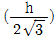
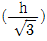
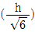
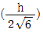
(정답률: 알수없음)
32. 압축력을 받는 성부주대를 2본으로 하고 인장력을 받는 하부주재는 1본으로 하여 양단에 부재를 붙여 전주에 취부하는 구조의 빔(Beam)은?
- 평면빔
- V형빔
- 4각빔
- 강관빔
(정답률: 알수없음)
33. 구조물의 강도계산에 적용하는 풍속은?
- 순간풍속
- 평균풍속
- 최대풍속
- 최저풍속
(정답률: 알수없음)
34. 탄성한도 내에서 봉에 축방향 인장력이 작용할 때, 봉의 체적변형율은? (단, e은 봉의 종변형율, v는 포와송비이다.)
- e(1-v)
- e(1-2v)
- e(1+v)
- e(1+2v)
(정답률: 알수없음)
35. 정삼각형의 도심을 지나는 여러 축에 대한 단면 2차 모멘트의 값에 대한 다음 설명 중 옳은 것은?
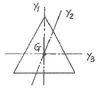
- Iy1>Iy2
- Iy1=Iy2=Iy3
- Iy2>Iy1
- Iy3>Iy2
(정답률: 알수없음)
36. 길이가 10m인 구조물에 온도가 10℃에서 50℃로 상승했을 때 온도에 의한 구조물의 신축량[mm]은? (단, 강재의 열팽창계수는 1.0×10-5이다.)
- 0.04
- 0.4
- 4
- 3
(정답률: 알수없음)
37. 외력이 작용했을 때 구조물의 위치가 변하지 않는 외적 안정조건에 대한 설명으로 맞는 것은?
- 외력이 작용했을 때 구조물의 위치가 변하는 경우
- 절점의 반력수가 1이상으로 힘의 평형조건을 만족할 때
- 지점의 반력수가 3이상으로 힘의 평형조건을 만족할 때
- 외력이 작용했을 때 구조물의 형태가 변하지 않은 경우
(정답률: 알수없음)
38. 크기가 같고 방향이 반대인 나란한 두 힘은?
- 우력
- 비틀림
- 풍력
- 연력
(정답률: 알수없음)
39. 그림과 같은 두 힘의 합력 R[t]은 약 얼마인가?
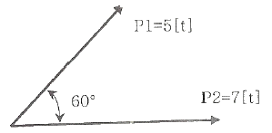
- 8.45
- 10.44
- 11.60
- 15.44
(정답률: 알수없음)
40. 곡선로의 수평장력[kgf]계산식은? (단, P : 수평장력(kgf), S : 경간, R : 곡선반지름(m), T : 전선의 장력(kgf))
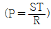
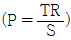
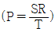
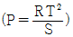
(정답률: 알수없음)
3과목: 전기자기학
41. 판자석의 세기가 0.01[Wb/m], 반지름이 5[cm]인 원형자석판이 있다. 자석의 중심에서 축상 10[cm]인 점에서의 자위의 세기는 몇 [AT]인가?
- 100
- 175
- 370
- 420
(정답률: 20%)
42. 철도궤도간 거리가 1.5[m]이며 궤도는 서로 절연되어 있다. 열차가 매시 60[km]의 속도로 달리면서 차축이 자구자계의 수직분력 B=0.15×10-4[Wb/m2]을 절단할 때 두 궤도사이에 발생하는 기전력은 몇 [V]인가?
- 1.75×10-4
- 2.75×10-4
- 3.75×10-4
- 4.75×10-4
(정답률: 알수없음)
43. 한 변의 길이가 500[mm]인 정사각형 평행 평판 2장이 10[mm] 간격으로 놓여 있고 다음과 같이 유전율이 다른 2개의 유전체로 채워진 경우 합성용량은 약 몇 [pF]인가?
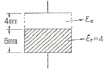
- 402
- 922
- 2028
- 4228
(정답률: 알수없음)
44. 전계 E[V/m], 자계 H[AT/m]의 전자계가 평면파를 이루고 자유공간으로 전파될 때 진행방향에 수직되는 단위면적을 단위시간에 통과하는 에너지는 몇 [W/m2]인가?
- EH2
- EH
- 1/2EH2
- 1/2EH
(정답률: 20%)
45. 선전하밀도가 λ[C/m]로 균일한 무한 직선도선의 전하로부터 거리가 r[m]인 점의 전계의 세기(E)는 몇 [V/m}인가?
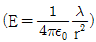
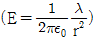
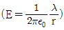
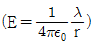
(정답률: 알수없음)
46. 그림과 같이 점 O를 중심으로 반지름 a[m]의 도체구 1과 내반지름 b[m], 외반지름 c[m]이 도체구 2가 있다. 이 도체계에서 전위계수 P11[//F]에 해당하는 것은?
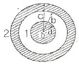
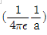
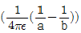
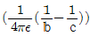
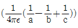
(정답률: 알수없음)
47. 그림에서 I[A]의 전류가 반지름 a[m]의 무한히 긴 원도도체를 축에 대하여 대칭으로 흐를 때 원주외부의 자계 H를 구한 값은?
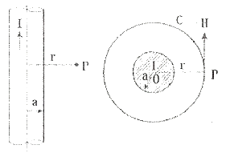
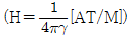
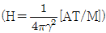
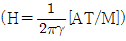
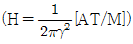
(정답률: 알수없음)
48. 반지름 a[m]인 반원형 전류 I[A]에 의한 중심에서의 자계의 세기는 몇 [AT/m]인가?
- I/4a
- I/a
- I/2a
- 2I/a
(정답률: 알수없음)
49. 반지름 a[m]인 도체구에 전하 Q[C]를 주었다. 도체구를 둘러싸고 있는 유전체의 유전율이 εs인 경우 경계면에 나타나는 분극 전하는 몇[C/m2]인가?
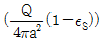
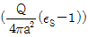
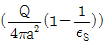
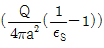
(정답률: 알수없음)
50. 자계의 벡터 포텐셜을 A[Wb/m]라 할 때 도체 주위에서 자계 B[Wb/m2]가 시간적으로 변화하면 도체에 생기는 전계의 세기 E[V/m]는?
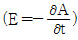
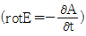
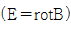
(정답률: 알수없음)
51. 정전용량 (C1)과 내압(Vimax이 다른 콘덴서를 여러 개 직렬로 연결하고 그 직렬회로 양단에 직류전압을 인가할 때 가장 먼저 절연이 파괴되는 콘덴서는?
- 정전용량이 가장 작은 콘덴서
- 최대 충전 전하량이 가장 작은 콘덴서
- 내압이 가장 작은 톤덴서
- 배분전압이 가장 큰 콘덴서
(정답률: 알수없음)
52. 패러데이 법칙에서 유도기전력 e[V]를 옳게 표현한 것은?
(정답률: 46%)
53. 같은 길이의 도선으로 M회와 N회 감은 원형 동심 코일에 각각 같은 전류를 흘릴 때 M회 감은 코일의 중심 자계는 N회 감은 코일의 몇 배인가?
- M/N
- M2/N
- M/N2
- M2/N2
(정답률: 알수없음)
54. 500[AT/m]의 자계 중에 어떤 자극을 놓았을 때 5×103[N]의 힘이 작용했을 때의 자극의 세기는 몇 [Wb]인가?
- 10
- 20
- 30
- 40
(정답률: 알수없음)
55. 그림과 같은 콘덴서 C[F]에 교번전압 Vssinwt[V]를 가했을 때 콘덴서 내의 변위전류[A]는?
(정답률: 37%)
56. 자기회로에 대한 설명으로 틀린 것은?
- 전기회로의 정전용량에 해당되는 것은 없다.
- 자기저항에는 전기저항의 줄 손실에 해당되는 손실이 있다.
- 기자력과 자속은 변화가 비직선성을 갖고 있다.
- 누설자속은 전기회로의 누설전류에 비하여 대체로 많다,
(정답률: 알수없음)
57. 2개의 폐회로 C1, C2에서 상호 유도계수를 구하는 노이만(Neumann)의 식으로 옳은 것은? (단, μ:투자율, ε:유전율, γ12:두 미소 부분간의 거리, dℓ1, dℓ2:각 회로상에 취한 미소부분이다.)
(정답률: 알수없음)
58. 환상철심에 권수 100회인 A코일과 권수 400회인 B코일이 있을 때 A의 자기인덕턴스 4[H]라면 두 코일의 상호인덕턴스는 몇 [H]인가?
- 16
- 12
- 8
- 4
(정답률: 37%)
59. 전류가 흐르는 도선을 자계 안에 놓으면, 이 도선에 힘이 작용한다. 평등 자계의 진공 중에 놓여 있는 직선 전류도선이 받는 힘에 대하여 옳은 것은?
- 전류의 세기에 반비례한다.
- 도선의 길이에 비례한다.
- 자계의 세기에 반비례한다.
- 전류와 자계의 방향이 이루는 각 tanθ에 비례한다.
(정답률: 알수없음)
60. 무한 평면도체에서 r[m] 떨어진 곳에 p[C/m]의 전하분포를 갖는 직선도체를 놓았을 때 직선도체가 받는 힘의 크기[N/m]는? (단, 공간의 유전율은 ε0이다.)
(정답률: 알수없음)
4과목: 전력공학
61. 단도체 방식과 비교하여 복도체 방식의 송전선로를 설명한 것으로 옳지 않은 것은?
- 전선의 인덕턴스가 감소하고, 정전용량이 증가한다.
- 선로의 송전용량이 증가한다.
- 계통의 안정도를 증진시킨다.
- 전선 표면의 전위경도가 저감되어 코로나 임계전압을 낮출 수 있다.
(정답률: 알수없음)
62. 전력선과 통신선간의 상호 정전용량 및 상호 인덕턴스에 의해 발생되는 유도장애로 옳은 것은?
- 정전유도장애 및 전자유도장애
- 정전유도장애 및 정전유도장애
- 정전유도장애 및 고조파유도장애
- 전자유도장애 및 고조파유도장애
(정답률: 알수없음)
63. 피뢰기가 구비하여야 할 조건으로 거리가 먼 것은?
- 충격방전 개시전압이 낮을 것
- 상용주파 방전 개시전압이 낮을 것
- 제한전압이 낮을 것
- 속류의 차단능력이 클 것
(정답률: 46%)
64. 조압수조(surge tank)의 설치 목적이 아닌 것은?
- 유량을 조절한다.
- 부하의 변동시 생기는 수격작용을 흡수한다.
- 수격압이 압력 수로에 미치는 것을 방지한다.
- 흡출관의 보호를 취한다.
(정답률: 알수없음)
65. 전력계통의 전압조정설비에 대한 특징으로 옳지 않은 것은?
- 병렬콘덴서는 진상능력만을 가지며 병렬리엑터는 진상능력이 없다.
- 동기조상기는 조정의 단계가 불연속적이나 직렬 콘덴서 및 병렬리액터는 연속적이다.
- 동기조상기는 무효전력의 공급과 흡수가 모두 가능하여 진상 및 지상용량을 갖는다.
- 병렬리액터는 장거리 초고압송전선 또는 지중선계통의 충전용량 보상용으로 주요 발·변전소에 설치된다.
(정답률: 알수없음)
66. 지중 전선로가 가공 전선로에 비해 장점에 해당하는 것이 아닌 것은?
- 경과지 확보가 가공 전선로에 비해 쉽다.
- 다회선 설치가 가공 전선로에 비해 쉽다.
- 외부 기상 여건 등의 영향을 받지 않는다.
- 송전용량이 가공 전선로에 비해 크다.
(정답률: 알수없음)
67. 화력발전소에서 절탄기의 용도는?
- 보일러에 공급되는 급수를 예열한다.
- 포화증기를 과열한다.
- 연소용 공기를 예열한다.
- 석탄을 건조한다.
(정답률: 알수없음)
68. 저압 배전선의 배전 방식 중 배전 설비가 단순하고, 공급 능력이 최대인 경제적 배분 방식이며 국내에서 220/380[V]승압 방식으로 채택된 방식은?
- 단상 2선식
- 단상 3선식
- 3상 3선식
- 3상 4선식
(정답률: 알수없음)
69. 주변압기 등에서 발생하는 제5고조파를 줄이는 방법으로 옳은 것은?
- 전력용 콘덴서에 직렬리액터를 접속한다.
- 변압가 2차측에 분로리액터를 연결한다.
- 모선에 방전코일을 연결한다.
- 모선에 공심 리액터를 연결한다.
(정답률: 알수없음)
70. 정격전압이 66[kV]인 3상 3선식 송전선로에서 1선이 리액턴스가 17[Ω]일 때, 이를 100[MVA] 기준으로 환산한 %리액턴스는 약 얼마인가?
- 35
- 39
- 45
- 49
(정답률: 알수없음)
71. 전등만으로 구성된 수용기를 두 군으로 나누어 각 군에 변압기 1개씩을 설치하며 각 군의 수용가의 총 설비 용량을 각각 30[kW], 50[kW]라 한다. 각 수용가의 수용률을 0.6, 수용기간 부동률을 1.2, 변압기군의 부동률을 1.3이라고 하면 고압 간선에 대한 최대 부하는 약 [kW] 인가? (단, 간선의 역률은 100%이다.)
- 15
- 22
- 31
- 35
(정답률: 알수없음)
72. 송전로에 코로나가 발생하면 전선이 부식된다. 무엇에 의하여 부식되는가?
- 산소
- 오존
- 수소
- 질소
(정답률: 알수없음)
73. 4단자 정수가 A, B, C, D인 송전선로의 등가 π회로를 그림과 같이 하면 Z1의 값은?
- B
- A/B
- D/B
- 1/B
(정답률: 알수없음)
74. 송전전력, 송전거리, 전선의 비중 및 전력손실률이 일정하다고 하면 전선의 단면적 A[mm2]와 송전전압 V[kV]와의 관계로 옳은 것은?
(정답률: 알수없음)
75. 다음 중 송전선로에 사용되는 애자의 특성이 나빠지는 원인으로 볼 수 없는 것은?
- 애자 각 부분의 열팽창의 상이
- 전선 상호간의 유도장애
- 누설전류에 의한 팽창
- 시멘트의 화학팽창 및 동결팽창
(정답률: 알수없음)
76. 공통 중성선 다중 접지방식의 배전선로에서 Recloser(R), Sectionalizer(S), Line fuse(F)의 보호 협조가 가장 적합한 배열은? (단, 왼쪽은 후비보호 역할이다.)
- S-F-R
- S-R-F
- F-S-R
- R-S-F
(정답률: 알수없음)
77. 통신선과 병행인 60[Hz]의 3상 1회선 송전선에서 1선 지락으로 110[A]의 영상 전류가 흐르고 있을 때 통신선에 유기되는 전자 유도전압은 약 몇 [V]인가? (단, 영상전류는 송전선 전체에 걸쳐 같은 크기이고 통신선과 송전선의 상호 인덕턴스는 0.⑤[mH/km], 양 선로의 평행 길이는 55[km]이다.)
- 252[V]
- 293[V]
- 342[V]
- 365[V]
(정답률: 알수없음)
78. 모선 보호에 사용되는 계전방식이 아닌 것은?
- 선택접지 계전방식
- 방향거리 계전방식
- 위상 비교방식
- 전류차동 보호방식
(정답률: 알수없음)
79. 다음 중 부하 전류의 차단에 사용되지 않는 것은?
- ABB
- OCB
- VCB
- DS
(정답률: 알수없음)
80. 3상 3선식 선로에서 수전단전압이 6600[V], 역률 80[%](지상), 정격전류 50[A]의 3상 평형부하가 연결되어 있다. 선로임피던스 R=3[Ω], X=4[Ω]인 경우 이때의 송전단전압은 약 몇 [V]인가?
- 7543
- 7037
- 7016
- 6852
(정답률: 40%)
행거길이 L은 이도 R과 경간 중앙에서의 이도 D, 그리고 가고 H에 의해 결정된다. 가고 H는 양쪽이 같으므로 상수값이다.
따라서, L은 D와 R에 비례하고, H에 반비례한다. 이를 수식으로 나타내면 L = H×R + D - H 이다.
하지만, 이 문제에서는 L = H-D+R 이 정답이다. 이는 위의 수식과 동일하게 L이 D와 R에 비례하고, H에 반비례함을 보여준다. 또한, 이 수식은 더 간단하고 직관적이다.
따라서, L = H-D+R 이 정답이다.